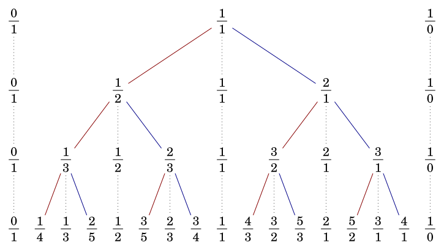
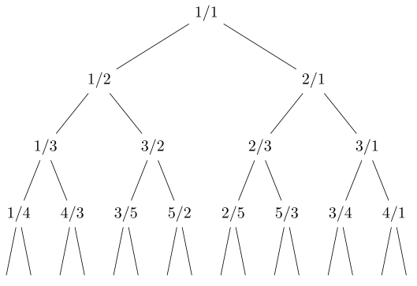
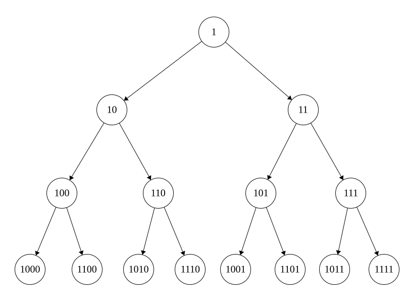
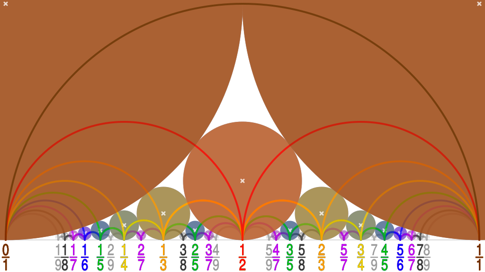

OI Wiki · prijevod · MatematikaOI Wiki · translation · Mathematics
Stern–Brocotovo stablo i Fareyev nizStern–Brocot Tree and Farey Sequence
Sadržaj
Uvod
Ovaj članak predstavlja strukturu podataka za pohranu neskrativih razlomaka i druge srodne pojmove. Oni su usko povezani s verižnim razlomcima, na algoritamskim natjecanjima mogu poslužiti za rješavanje niza problema iz teorije brojeva, a mogu se pojaviti i kao skrivena pozadina nekih zadataka.
Stern–Brocotovo stablo
Stern–Brocotovo stablo elegantna je struktura za održavanje razlomaka koja sadrži sve različite pozitivne racionalne brojeve. Tu su strukturu neovisno otkrili Moritz Stern 1858. godine i Achille Brocot 1861. godine.
Konstrukcija
Konstrukcija po razinama
Stern–Brocotovo stablo može se dobiti iterativnom konstrukcijom Stern–Brocotova niza \(k\)-tog reda (Stern–Brocot sequence of order \(k\)). Stern–Brocotov niz \(0\)-tog reda sastoji se od dvaju jednostavnih razlomaka:
Ovdje \(\dfrac{1}{0}\), strogo govoreći, nije racionalan razlomak; može se shvatiti kao neskrativi razlomak koji predstavlja \(\infty\).
Ako između svakih dvaju susjednih razlomaka \(\dfrac{a}{b}\) i \(\dfrac{c}{d}\) Stern–Brocotova niza \(k\)-tog reda umetnemo njihovu medijantu (mediant)1 \(\dfrac{a+c}{b+d}\), dobivamo Stern–Brocotov niz reda \(k+1\). Iako sama definicija medijante dopušta skraćivanje razlomka, u konstrukciji Stern–Brocotova stabla dovoljno je jednostavno zbrojiti brojnike i nazivnike, bez brige o skraćivanju. Tako se iterativno mogu konstruirati Stern–Brocotovi nizovi svih redova. Rezultati prvih nekoliko iteracija su sljedeći:
Ako razlomke dodane u svakoj iteraciji povežemo u strukturu stabla, dobivamo Stern–Brocotovo stablo, kao na slici:

Stern–Brocotov niz \(k\)-tog reda, bez lijeve i desne krajnje točke, upravo je inorder obilazak Stern–Brocotova stabla dubine \(k-1\).
Konstrukcija trojkama
Drugi, ekvivalentan način konstrukcije jest da se trojka
uzme za korijen, a svakom čvoru
dodaju
kao lijevo odnosno desno dijete; tako se konstruira cijelo Stern–Brocotovo stablo. U trojci zapisanoj u svakom čvoru Stern–Brocotova stabla stvarno pohranjeni razlomak je srednji razlomak trojke \(\dfrac{p}{q}\), dok su lijevi i desni razlomak \(\dfrac{a}{b}\) i \(\dfrac{c}{d}\) razlomci koji su se pojavili ranije. Štoviše, ako razmotrimo prethodnu konstrukciju, vidimo da je razlomak \(\dfrac{p}{q}\) upravo dobiven umetanjem medijante razlomaka \(\dfrac{a}{b}\) i \(\dfrac{c}{d}\).
Matrični prikaz i Stern–Brocotov brojevni sustav
Konstrukcija trojkama znači da svakom čvoru Stern–Brocotova stabla odgovara matrica
Korijen Stern–Brocotova stabla je jedinična matrica \(I\), a prelazak u lijevo dijete odnosno desno dijete odgovara množenju matrice trenutačnog čvora s desne strane matricom
Razlomak koji stvarno odgovara svakom čvoru je \(f(S)=\dfrac{a+c}{b+d}\). Matrica \(S\) svakog čvora može se zapisati kao umnožak niza matrica \(L\) i \(R\), što se može shvatiti i kao niz znakova sastavljen od \(L\) i \(R\) koji predstavlja put od korijena do tog čvora. Time se svi pozitivni racionalni brojevi jednoznačno prikazuju takvim nizovima znakova, što se može smatrati jednim prikazom pozitivnih racionalnih brojeva, pa se stoga naziva i Stern–Brocotov brojevni sustav (Stern–Brocot number system).
Implementacija izgradnje stabla
Algoritam izgradnje stabla samo simulira gore opisani postupak. Slijedi kôd koji obavlja inorder obilazak prvih \(n\) razina Stern–Brocotova stabla.
Izgradnja stabla
// In-Order Transversal of Stern-Brocot Tree till Layer N.
void build(int n, int a = 0, int b = 1, int c = 1, int d = 0, int level = 1) {
if (level > n) return; // Only first n layers.
int x = a + c, y = b + d;
build(n, a, b, x, y, level + 1);
std::cout << x << '/' << y << ' '; // Output the current fraction.
build(n, x, y, c, d, level + 1);
}
# In-Order Transversal of Stern-Brocot Tree till Layer N.
def build(n, a=0, b=1, c=1, d=0, level=1):
if level > n:
return
x, y = a + c, b + d
build(n, a, b, x, y, level + 1)
print(f"{x}/{y}", end=" ")
build(n, x, y, c, d, level + 1)
Složenost algoritma izgradnje stabla je \(O(2^n)\).
Svojstva
Sada raspravljamo o svojstvima Stern–Brocotova stabla. Ukratko, Stern–Brocotovo stablo je binarno stablo pretraživanja koje sadrži sve pozitivne neskrative racionalne razlomke; ono je ujedno heap po brojnicima i po nazivnicima, kao i Kartezijevo stablo parova (nazivnik, brojnik). Ako razmotrimo intervale koje tvore lijeva i desna krajnja točka u ranije opisanoj konstrukciji trojkama, Stern–Brocotovo stablo može se promatrati i kao segment tree nad \([0,\infty]\). Te se tvrdnje mogu izvesti iz sljedećih triju osnovnih svojstava:
Monotonost
U gornjoj konstrukciji razlomci su na svakoj razini strogo rastući. To se dokazuje indukcijom. Naime, ako je \(\dfrac{a}{b} < \dfrac{c}{d}\), nužno vrijedi
To se dobiva uklanjanjem nazivnika iz nejednakosti. Baza indukcije je \(\dfrac{0}{1} < \dfrac{1}{0}\), pa monotonost očito vrijedi.
Neskrativost
U gornjoj konstrukciji svaki je razlomak neskrativ. Za to također treba indukcijom dokazati da u gornjoj konstrukciji svaka dva susjedna razlomka \(\dfrac{a}{b}\) i \(\dfrac{c}{d}\) na istoj razini zadovoljavaju jednakost
U korijenu je jedinična matrica, pa to očito vrijedi. Pri spuštanju množimo matricama \(L\) i \(R\) čije su determinante jednake \(1\), pa prema svojstvima determinante na sljedećoj razini jednako vrijedi
Za bazu indukcije \(\dfrac{0}{1}\) i \(\dfrac{1}{0}\) to je također očito. Iz toga, prema Bézoutovu teoremu, nužno slijedi da su brojnik i nazivnik svakog razlomka relativno prosti, tj. svi su razlomci neskrativi.
Potpunost
Naposljetku, treba pokazati da Stern–Brocotovo stablo sadrži sve pozitivne neskrative razlomke. Budući da prva dva svojstva već pokazuju da je Stern–Brocotovo stablo binarno stablo pretraživanja, a svaki pozitivni neskrativi razlomak \(\dfrac{p}{q}\) nužno leži između \(\dfrac{0}{1}\) i \(\dfrac{1}{0}\), prema načinu pretraživanja u binarnom stablu pretraživanja jedina mogućnost da \(\dfrac{p}{q}\) nema u stablu jest da je postupak pretraživanja beskonačno dug. Dokazat ćemo da je za svaki pozitivni racionalni broj \(\dfrac{p}{q}\) beskonačno dug postupak pretraživanja nemoguć.
Neka je donja granica za \(\dfrac{p}{q}\) dobivena tijekom pretraživanja \(\dfrac{a}{b}\), a gornja granica \(\dfrac{c}{d}\). Početna vrijednost donje granice je \(\dfrac{0}{1}\), početna vrijednost gornje granice je \(\dfrac{1}{0}\), a zatim se granice postupno prilagođavaju prema rezultatu usporedbe \(\dfrac{a+c}{b+d}\) i \(\dfrac{p}{q}\). Ako je postupak pretraživanja beskonačno dug, u svakom koraku vrijedi
pa u beskonačno mnogo koraka nužno vrijedi
Pomnožimo li te dvije nejednakosti redom s \((c+d)\) i \((a+b)\), dobivamo
Pomoću ranije pokazane jednakosti \(bc-ad=1\) gornji se izraz pojednostavnjuje u
Međutim, svaki put kad pretraživanje siđe jednu razinu dublje, desna strana nejednakosti strogo raste, a lijeva ostaje ista, pa gornji uvjet ne može vrijediti u beskonačno mnogo koraka. Stoga se postupak pretraživanja zaustavlja u konačno mnogo koraka.
Traženje razlomka
U praktičnoj primjeni Stern–Brocotova stabla često treba odrediti položaj zadanog razlomka u Stern–Brocotovu stablu.
Naivni algoritam
Budući da je Stern–Brocotovo stablo binarno stablo pretraživanja, dovoljno je usporediti trenutačni razlomak s traženim razlomkom da bi se odredio put od korijena do zadanog razlomka. Ako prelazak u lijevo dijete odnosno desno dijete na putu označimo s \(L\) odnosno \(R\), svakom putu odgovara niz znakova sastavljen od \(L\) i \(R\), a to je upravo ranije spomenuti prikaz racionalnog broja u Stern–Brocotovu brojevnom sustavu. Određivanje puta do nekog racionalnog broja istovjetno je određivanju prikaza tog racionalnog broja u Stern–Brocotovu brojevnom sustavu.
Implementacija naivnog algoritma traženja razlomka izgleda ovako:
Naivno traženje razlomka
// Locate a given fraction in the Stern-Brocot tree.
std::string find(int x, int y, int a = 0, int b = 1, int c = 1, int d = 0) {
int m = a + c, n = b + d;
if (x == m && y == n) return "";
if (x * n < y * m) {
return 'L' + find(x, y, a, b, m, n);
} else {
return 'R' + find(x, y, m, n, c, d);
}
}
# Locate a given fraction in the Stern-Brocot tree.
def find(x, y, a=0, b=1, c=1, d=0):
m = a + c
n = b + d
if x == m and y == n:
return ""
if x * n < y * m:
return "L" + find(x, y, a, b, m, n)
else:
return "R" + find(x, y, m, n, c, d)
Složenost algoritma je \(O(p+q)\), pa na algoritamskim natjecanjima nije praktičan.
U Stern–Brocotovu brojevnom sustavu svakom pozitivnom iracionalnom broju odgovara jedinstven beskonačno dug niz znakova. Isti algoritam može se upotrijebiti za konstrukciju tog niza. Svakom prefiksu tog beskonačnog niza odgovara neki racionalni neskrativi razlomak. Poredamo li te neskrative razlomke u niz, nazivnici razlomaka u nizu strogo rastu, a limes niza je taj iracionalni broj. Stoga se Stern–Brocotovo stablo može upotrijebiti za nalaženje racionalne aproksimacije nekog iracionalnog broja s proizvoljnom točnošću. Treba, međutim, imati na umu da razlika između tog niza racionalnih brojeva i iracionalnog broja nije strogo padajuća. Za strogu teoriju racionalnih aproksimacija vidi odjeljak Diofantske aproksimacije na stranici o verižnim razlomcima. Kad se Stern–Brocotovo stablo u praksi koristi za nalaženje najbolje aproksimacije nekog realnog broja s nazivnikom koji ne prelazi zadanu granicu, na kraju treba usporediti udaljenosti lijeve i desne krajnje točke intervala od tog realnog broja.
Brzi algoritam
Naivni algoritam traženja razlomka nije učinkovit, ali jednostavnom optimizacijom dobiva se brzi algoritam traženja složenosti \(O(\log(p+q))\). Ključ optimizacije je zajednička obrada uzastopnih \(L\) odnosno \(R\).
Ako traženi razlomak \(\dfrac{p}{q}\) pada između \(\dfrac{a}{b}\) i \(\dfrac{c}{d}\), tada pri \(t\) uzastopnih pomaka udesno desna granica ostaje nepomična, a lijeva se granica pomiče u \(\dfrac{a+tc}{b+td}\); obrnuto, pri \(t\) uzastopnih pomaka ulijevo lijeva granica ostaje nepomična, a desna se granica pomiče u \(\dfrac{ta+c}{tb+d}\). Stoga se broj pomaka udesno odnosno ulijevo može odrediti izravno pomoću \(\dfrac{a+tc}{b+td}<\dfrac{p}{q}\) odnosno \(\dfrac{p}{q}<\dfrac{ta+c}{tb+d}\). Ovdje se uzima stroga nejednakost jer algoritam pomiče lijevu i desnu krajnju točku, a traženi se razlomak pojavljuje kao medijanta konačno dobivenih krajnjih točaka.
Brzo traženje razlomka
// Locate a given fraction in the Stern-Brocot tree.
auto find(int x, int y) {
std::vector<std::pair<int, char>> res;
int a = 0, b = 1, c = 1, d = 0;
bool right = true;
while (x != a + c || y != b + d) {
if (right) {
auto t = (b * x - a * y - 1) / (y * c - x * d);
res.emplace_back(t, 'R');
a += t * c;
b += t * d;
} else {
auto t = (y * c - x * d - 1) / (b * x - a * y);
res.emplace_back(t, 'L');
c += t * a;
d += t * b;
}
right ^= 1;
}
return res;
}
# Locate a given fraction in the Stern-Brocot tree.
def find(x, y):
res = []
a, b, c, d = 0, 1, 1, 0
right = True
while x != a + c or y != b + d:
if right:
t = (b * x - a * y - 1) // (y * c - x * d)
res.append((t, "R"))
a += t * c
b += t * d
else:
t = (y * c - x * d - 1) // (b * x - a * y)
res.append((t, "L"))
c += t * a
d += t * b
right ^= 1
return res
Ovaj algoritam traženja zahtijeva da je razlomak \(\dfrac{p}{q}\) poznat. Ako ciljni razlomak nije poznat, često je pri svakom pomaku udesno ili ulijevo potrebno broj pomaka tražiti udvostručavanjem (binary lifting) ili binarnim pretraživanjem. Tada je složenost algoritma traženja razlomka \(O(\log^2(p+q))\).
Algoritam temeljen na verižnim razlomcima
Za slučaj kad je razlomak poznat, pomoću verižnih razlomaka može se dati još jednostavniji algoritam. Bez smanjenja općenitosti pretpostavimo da je prva skupina pomaka udesno; ako nije, neka broj pomaka u prvoj skupini pomaka udesno bude nula. Krajnje točke pomičemo naizmjence udesno i ulijevo, a položaje krajnjih točaka nakon svake skupine pomaka poredamo ovako:
Pri tome su skupine pomaka s parnim indeksom usmjerene udesno, pa bilježe položaj lijeve krajnje točke; skupine s neparnim indeksom usmjerene su ulijevo, pa bilježe položaj desne krajnje točke. Ispred tog niza krajnjih točaka dodamo još dvije krajnje točke
Neka je broj pomaka u \(k\)-toj skupini \(t_k\); prema gore dobivenoj vezi između broja pomaka i položaja krajnjih točaka vrijedi
Prema rekurzivnoj relaciji verižnih razlomaka slijedi da je krajnja točka
Konačno dobiveni verižni razlomak je
Dakle, u prikazu verižnim razlomkom ciljnog razlomka koji završava jedinicom, članovi ispred posljednje jedinice kodiraju put od korijena do trenutačnog čvora u Stern–Brocotovu stablu. Pri tome članovi s parnim indeksom (indeksi počinju od \(0\)) odgovaraju bridovima prema desnom djetetu, a članovi s neparnim indeksom bridovima prema lijevom djetetu.
Prikaz racionalnog broja verižnim razlomkom može se dobiti Euklidovim algoritmom, pa je složenost algoritma traženja razlomka temeljenog na prikazu verižnim razlomkom \(O(\log\min\{p,q\})\).
Traženje razlomka temeljeno na verižnim razlomcima
// Locate a given fraction in the Stern-Brocot tree.
auto find(int x, int y) {
std::vector<std::pair<int, char>> res;
bool right = true;
while (y) {
res.emplace_back(x / y, right ? 'R' : 'L');
x %= y;
std::swap(x, y);
right ^= 1;
}
--res.back().first;
return res;
}
# Locate a given fraction in the Stern-Brocot tree.
def find(x, y):
res = []
right = True
while y:
res.append([x // y, ("R" if right else "L")])
x, y = y, x % y
right ^= 1
res[-1][0] -= 1
return res
Pomoću prikaza verižnim razlomkom jednostavno se izražavaju roditelj i djeca nekog čvora. Za čvor \([t_0,t_1,\cdots,t_n,1]\) roditelj je čvor koji u smjeru posljednjeg pomaka ima jedan pomak manje: ako je \(t_n>1\), roditelj je \([t_0,t_1,\cdots,t_n - 1,1]\); inače je roditelj \([t_0,t_1,\cdots,t_{n-1},1]\). Njegova dva djeteta su redom \([t_0,t_1,\cdots,t_n+1,1]\) i \([t_0,t_1,\cdots,t_n,1,1]\); koji je od tih dvaju čvorova lijevo, a koji desno dijete, određuje se prema parnosti \(n\).
Calkin–Wilfovo stablo
Još jedna, jednostavnija struktura za pohranu pozitivnih racionalnih razlomaka je Calkin–Wilfovo stablo. Obično se prikazuje ovako:

Korijen stabla je \(\dfrac{1}{1}\). Zatim, za čvor u kojem je razlomak \(\dfrac{p}{q}\), njegovo lijevo odnosno desno dijete su \(\dfrac{p}{p+q}\) odnosno \(\dfrac{p+q}{q}\). Slično Stern–Brocotovu stablu, svaki je njegov razlomak neskrativ i sadrži svaki pozitivni neskrativi razlomak točno jednom.
Veza s verižnim razlomcima
Za razliku od Stern–Brocotova stabla, Calkin–Wilfovo stablo nije binarno stablo pretraživanja, pa se ne može upotrijebiti za binarno pretraživanje racionalnih brojeva.
U Calkin–Wilfovu stablu, kad je \(p>q\), roditelj razlomka \(\dfrac{p}{q}\) je \(\dfrac{p-q}{q}\); kad je \(p<q\), roditelj je \(\dfrac{p}{q-p}\). U prvom slučaju, krenuvši od \(\dfrac{p}{q}\), on je desno dijete svog roditelja i možemo se neprestano penjati preko desne strane roditelja sve dok brojnik više nije veći od nazivnika; tada je u čvoru pohranjen razlomak \(\dfrac{p\bmod q}{q}\), a broj pomaka u ovoj skupini je \(\left\lfloor\dfrac{p}{q}\right\rfloor\). U drugom slučaju on je lijevo dijete svog roditelja i možemo se neprestano penjati preko lijeve strane roditelja sve dok nazivnik više nije veći od brojnika; tada je u čvoru pohranjen razlomak \(\dfrac{p}{q\bmod p}\), a broj pomaka u ovoj skupini je \(\left\lfloor\dfrac{q}{p}\right\rfloor\).
Jezikom verižnih razlomaka: neka je u trenutačnom čvoru pohranjen ostatak \(s_k\) nekog verižnog razlomka; tada se penjanjem preko desne strane roditelja \(\lfloor s_k\rfloor\) puta dolazi do razlomka \(\dfrac{1}{s_{k+1}}\), a zatim se pomicanjem preko lijeve strane roditelja \(\lfloor s_{k+1}\rfloor\) puta dolazi do razlomka \(s_{k+2}\). Stoga je put od čvora \(s_0=\dfrac{p}{q}\) prema gore do korijena \(\dfrac{1}{1}\) kodiran verižnim razlomkom \([t_0,t_1,\cdots,t_n,1]\): izuzev posljednje \(1\), članovi s parnim indeksom (indeksi počinju od \(0\)) označavaju broj pomaka preko desne strane roditelja, a članovi s neparnim indeksom broj pomaka preko lijeve strane roditelja.
Za čvor u kojem je razlomak \(\dfrac{p}{q}=[t_0,t_1,\cdots,t_n,1]\) roditelj ima sljedeći prikaz:
- kad je \(t_0>0\), roditelj je \(\dfrac{p-q}{q}=[t_0 - 1, t_1, \cdots, t_n,1]\);
- kad je \(t_0=0\) i \(t_1>1\), roditelj je \(\dfrac{p}{q-p} = [0, t_1 - 1, t_2, \cdots, t_n,1]\);
- kad je \(t_0=0\) i \(t_1=1\), roditelj je \(\dfrac{p}{q-p} = [t_2, t_3, \cdots, t_n,1]\).
Obrnuto, njegova su djeca redom \(\dfrac{p+q}{q}=[t_0+1,t_1,\cdots,t_n,1]\) i \(\dfrac{p}{p+q}=[0,1,t_0,t_1,\cdots,t_n,1]\). Prikaz drugog djeteta verižnim razlomkom, kad je \(t_0=0\), treba shvatiti kao \([0,1+t_1,t_2,\cdots,t_n,1]\).
Veza sa Stern–Brocotovim stablom
Također u vezi s verižnim razlomcima: čvorovi na putu u Stern–Brocotovu stablu pokazuju rekurzivnu relaciju konvergenata (approximants), dok čvorovi na putu u Calkin–Wilfovu stablu pokazuju rekurzivnu relaciju ostataka. Prikaz istog razlomka verižnim razlomkom je jednoznačan, pa je kôd puta od njega do korijena u Calkin–Wilfovu stablu potpuno jednak kodu puta od korijena do njega u Stern–Brocotovu stablu. No budući da su smjerovi putova suprotni, iako su razlomci pohranjeni na istoj razini Stern–Brocotova i Calkin–Wilfova stabla jednaki, njihovi se položaji razlikuju.
Ako na oba stabla provedemo pretraživanje u širinu i redom numeriramo čvorove, pri čemu korijen dobiva broj \(1\), lijevo i desno dijete čvora s brojem \(v\) su redom \(2v\) i \(2v+1\). Gledano u binarnom zapisu broja, izuzev početne \(1\), od najviših bitova prema najnižima svaka \(1\) označava pomak u desno dijete, a svaka \(0\) pomak u lijevo dijete. U Calkin–Wilfovu stablu broj čvora u kojem se nalazi racionalni broj s prikazom verižnim razlomkom \([t_0,t_1,\cdots,t_n,1]\) je
Odgovarajuće, u Stern–Brocotovu stablu broj čvora u kojem se nalazi racionalni broj s prikazom verižnim razlomkom \([t_0,t_1,\cdots,t_n,1]\) je
Izbrišemo li početnu \(1\), broj sastavljen od preostalih binarnih znamenki upravo je redni broj čvora na toj razini gledano slijeva nadesno (počevši od \(0\)). Ovo izvođenje pokazuje da su rasporedi razlomaka na istoj razini Stern–Brocotova i Calkin–Wilfova stabla međusobno povezani permutacijom obrnutih bitova (bit-reversal permutation), tj. permutacijom na \(0\sim (2^k-1)\) dobivenom obrtanjem binarnih znamenki indeksa (dopunjenih vodećim \(0\)).
Upravo zato se čvorovi Stern–Brocotova stabla ponekad numeriraju prema brojevima odgovarajućih čvorova Calkin–Wilfova stabla; tako dobivena numeracija prikazana je na sljedećoj slici:

Ta se numeracija može konstruirati rekurzivno: korijen ima broj \(1\); pri svakom prelasku u lijevo dijete vodeća \(1\) broja zamjenjuje se s \(10\), a pri prelasku u desno dijete vodeća \(1\) broja zamjenjuje se s \(11\). Čitanjem tog broja zdesna nalijevo dobiva se put od korijena do tog čvora.
Sternov diatomski niz
Poredamo li sve razlomke Calkin–Wilfova stabla prema brojevima iz pretraživanja u širinu, ili sve razlomke Stern–Brocotova stabla prema numeraciji s gornje slike, dobivamo sljedeći niz:
Pomoću postupka konstrukcije Calkin–Wilfova stabla može se dokazati da je u tom nizu nazivnik svakog razlomka nužno jednak brojniku sljedećeg. Izdvojimo li brojnike, dobivamo Sternov diatomski niz (Stern diatomic sequence, OEIS A002487), koji se naziva i Stern–Brocotov niz (Stern–Brocot sequence). Numeracija gornjeg niza počinje od \(1\), a dodatno se definira da je \(0\)-ti član jednak \(0\).
Neka je \(a_n\) \(n\)-ti član Sternova diatomskog niza; tada on zadovoljava sljedeću rekurzivnu relaciju:
Baza rekurzije je \(a_0=0\) i \(a_1=1\). Za izračun vrijednosti \(a_n\) Sternova diatomskog niza izravna primjena rekurzivne relacije ima složenost \(O(\log^2n)\), što nije dobro. Bolji je pristup promatrati ga kao brojnik razlomka s brojem \(n\) u Calkin–Wilfovu stablu i izračunati ga pomoću gore opisane rekurzivne relacije temeljene na verižnim razlomcima, uz složenost \(O(\log n)\).
Fareyev niz
Fareyev niz ima vrlo slična obilježja kao Stern–Brocotovo stablo. Fareyev niz \(n\)-tog reda (Farey sequence of order \(n\)) označavamo s \(F_n\). To je niz koji nastaje poredanjem po veličini svih neskrativih razlomaka iz \([0,1]\) s nazivnikom manjim od ili jednakim \(n\):
Prema definiciji Fareyeva niza on prirodno zadovoljava monotonost, neskrativost i potpunost. Kao što je gore prikazano, razlomci koje \(F_k\) dodaje u odnosu na \(F_{k-1}\) uvijek su medijante susjednih razlomaka u \(F_{k-1}\).
Gore opisani algoritam izgradnje Stern–Brocotova stabla jednako se može primijeniti na izgradnju Fareyeva niza. Budući da Stern–Brocotovo stablo sadrži sve neskrative razlomke, dovoljno je rubni uvjet zamijeniti ograničenjem na nazivnik da bi se dobio kôd za konstrukciju Fareyeva niza. Fareyev niz \(n\)-tog reda \(F_n\) može se promatrati kao podniz Stern–Brocotova niza \(n\)-tog reda.
Izgradnja Fareyeva niza
// Farey Sequence of Order N.
void build(int n, int a = 0, int b = 1, int c = 1, int d = 1,
bool init = true) {
int x = a + c, y = b + d;
if (y > n) return; // Only first n layers.
if (init) std::cout << "0/1 "; // Output 0/1;
build(n, a, b, x, y, false);
std::cout << x << '/' << y << ' '; // Output the current fraction.
build(n, x, y, c, d, false);
if (init) std::cout << "1/1 "; // Output 1/1;
}
# Farey Sequence of Order N.
def build(n, a=0, b=1, c=1, d=1, init=True):
x, y = a + c, b + d
if y > n:
return
if init:
print("0/1", end=" ")
build(n, a, b, x, y, False)
print(f"{x}/{y}", end=" ")
build(n, x, y, c, d, False)
if init:
print("1/1", end=" ")
Složenost izravne izgradnje Fareyeva niza je \(O(|F_n|)=O(n^2)\).
Duljina niza i traženje razlomka
Duljina Fareyeva niza može se izračunati rekurzivno. U odnosu na \(F_{n-1}\), razlomci koje niz \(F_n\) ima više svi imaju nazivnik \(n\), a brojnik im ne prelazi \(n\) i relativno je prost s \(n\), pa vrijedi:
Ovdje je \(\varphi(n)\) Eulerova funkcija. Taj se izraz pomoću linearnog sita može izračunati u \(O(n)\), a pomoću Du sita složenost se može spustiti na \(O(n^{2/3})\).
Češći od izravnog računanja duljine niza je slučaj kad treba odrediti redni broj nekog razlomka \(r=\dfrac{p}{q}\) u nizu \(F_n\). To je jednako izračunu vrijednosti
Za dobivanje desne strane primijenjena je Möbiusova inverzija. Kombinacijom linearnog sita i nabrajanja djelitelja postiže se \(O(n)\) pretprocesiranja i \(O(n\log n)\) po upitu; kombinacijom Du sita i algoritma nalik Euklidovu postiže se \(O(n^{2/3})\) pretprocesiranja i \(O(\sqrt n\log n)\) po upitu.
Obrnuto, za nalaženje razlomka iz poznatog rednog broja treba binarno pretraživati po realnim brojevima iz \([0,1]\) ili binarno pretraživati u Stern–Brocotovu stablu. Prvi pristup može biti ograničen točnošću brojeva s pomičnim zarezom, a broj upita za redni broj razlomka je \(O(\log V)\), gdje je \(V\) raspon točnosti; drugi pristup nije ograničen točnošću brojeva s pomičnim zarezom, ali je broj upita za redni broj razlomka \(O(\log^2n)\).
Fareyevi susjedi
Ako su razlomci \(\dfrac{a}{b}\) i \(\dfrac{c}{d}\) susjedni u nekom Fareyevu nizu, nazivaju se Fareyevim susjedima (Farey neighbors), a također i Fareyevim parom (Farey pair).
Neka je \(\dfrac{a}{b}<\dfrac{c}{d}\). Iz postupka konstrukcije Fareyeva niza znamo da je od dvaju susjednih razlomaka onaj kasnije dodani nužno medijanta drugog razlomka i njegova prethodnog susjeda, pa su Fareyevi susjedi susjedni i u Stern–Brocotovu nizu nekog reda; prema zaključku dokazanom u odjeljku Neskrativost nužno vrijedi i
Obrnuto, to je i dovoljan uvjet da dva neskrativa prava razlomka budu Fareyevi susjedi. Pokažimo to. Bez smanjenja općenitosti neka je \(\dfrac{a}{b}\) onaj od dvaju razlomaka s većim nazivnikom; tada se oba razlomka pojavljuju u \(F_b\). Neka je \(\dfrac{e}{f}\) član niza \(F_b\) koji se nalazi neposredno desno od \(\dfrac{a}{b}\); prema već pokazanoj nužnosti vrijedi \(be-af=1\). Međutim, linearna kongruencija \(bx-ay=1\) ima samo jedno rješenje u pozitivnim cijelim brojevima s \(y\le b\), pa nužno vrijedi \((e,f)=(c,d)\).
Zapravo, budući da je sljedeći neskrativi razlomak koji će se pojaviti između njih nužno \(\dfrac{a+c}{b+d}\), razlomci \(\dfrac{a}{b}\) i \(\dfrac{c}{d}\) susjedni su u Fareyevim nizovima od \(\max\{b,d\}\)-tog do \((b+d-1)\)-og reda.
Odnos Fareyevih susjeda s nazivnikom koji ne prelazi \(9\) prikazan je na sljedećoj slici:

Kružnice na slici nazivaju se Fordove kružnice: za svaki neskrativi razlomak \(\dfrac{p}{q}\) iz \([0,1]\) nacrta se kružnica sa središtem \(\left(\dfrac{p}{q},\dfrac{1}{2q^2}\right)\) i polumjerom \(\dfrac{1}{2q^2}\). Slika pokazuje da se Fordove kružnice koje odgovaraju dvama razlomcima mogu samo dodirivati ili biti razdvojene, a dodiruju se ako i samo ako su ta dva razlomka Fareyevi susjedi. Štoviše, za bilo koje dvije kružnice na slici koje se dodiruju uvijek postoji jedinstvena treća kružnica koja dodiruje obje. Razlomak koji odgovara toj trećoj kružnici upravo je medijanta razlomaka koji odgovaraju tim dvjema kružnicama.
Da bismo provjerili da kružnice koje se dodiruju uvijek odgovaraju Fareyevim susjedima, možemo izravno izračunati udaljenost dvaju središta:
Budući da su dva neskrativa razlomka različita, vrijedi \(|bc-ad|\ge 1\), pa se dvije kružnice mogu samo dodirivati ili biti razdvojene. Štoviše, dvije se kružnice dodiruju ako i samo ako je \(|bc-ad|=1\), što je ekvivalentno tome da su ta dva razlomka Fareyevi susjedi.
Naposljetku, izračunajmo broj parova Fareyevih susjeda. Osim \(\left(\dfrac{0}{1},\dfrac{1}{1}\right)\), svi ostali Fareyevi susjedi imaju različite nazivnike. Bez smanjenja općenitosti neka je \(\dfrac{p}{q}\) onaj s većim nazivnikom; tada se drugi razlomak nužno može dobiti iz linearne diofantske jednadžbe u dvije nepoznanice
Svaka od dviju jednadžbi ima točno jedno rješenje u pozitivnim cijelim brojevima koje zadovoljava \(y<q\), a ona odgovaraju susjedima lijevo odnosno desno od \(\dfrac{p}{q}\). Stoga svaki pravi razlomak iz \((0,1)\) ima dva Fareyeva susjeda s nazivnikom manjim od njegova; dodamo li \(\dfrac{0}{1}\) i \(\dfrac{1}{1}\), slijedi da niz \(F_n\) ima ukupno \((2|F_n|-3)\) parova Fareyevih susjeda.
Naravno, razlomci \(\dfrac{a}{b}<\dfrac{c}{d}\) nađeni u tom postupku upravo su lijevi i desni susjed razlomka \(\dfrac{p}{q}\) u trenutku njegova umetanja u niz. Stoga su oni i sami Fareyevi susjedi, a \(\dfrac{p}{q}\) je njihova medijanta. Neka je \(\dfrac{p}{q}=[t_0,t_1,\cdots,t_n,1]\); tada su ta dva Fareyeva susjeda s manjim nazivnicima redom \([t_0,t_1,\cdots,t_n]\) i \([t_0,t_1,\cdots,t_{n-1}]\).
Za izračun ostalih Fareyevih susjeda trenutačnog razlomka \(\dfrac{p}{q}\) dovoljno je proširenim Euklidovim algoritmom odrediti sva rješenja koja zadovoljavaju uvjete.
Rekurzivna relacija
Fareyev niz ima jednostavnu rekurzivnu relaciju kojom se slijeva nadesno redom mogu izračunati svi razlomci Fareyeva niza \(n\)-tog reda.
Prvo, prethodna analiza pokazuje da je u \(F_n\) novododani član \(\dfrac{p}{n}\) uvijek medijanta dvaju susjednih razlomaka, lijevog i desnog. Zapravo ta relacija vrijedi za sve razlomke u \(F_n\) (osim dviju krajnjih točaka). Neka je \(\dfrac{a}{b}<\dfrac{p}{q}<\dfrac{c}{d}\); prema nužnom i dovoljnom uvjetu za Fareyeve susjede uvijek vrijedi
Međutim, u općem slučaju razlomak \(\dfrac{a+c}{b+d}\) možda treba skratiti.
Pomoću tog opažanja može se izgraditi sljedeća rekurzivna relacija. Neka su \(\dfrac{a}{b}\) i \(\dfrac{p}{q}\) poznati, a treba odrediti vrijednost trećeg razlomka \(\dfrac{c}{d}\). Tada postoji \(k\) takav da vrijedi
Budući da razlika
pada s rastom \(k\), a neposredno uz \(\dfrac{p}{q}\) treba biti onaj razlomak među svima koji zadovoljavaju \(kq-b\le n\) s najmanjom tom razlikom, nužno vrijedi
Može se provjeriti da je tako dobiveni razlomak nužno u \(F_n\). Stoga brojnici i nazivnici razlomaka u \(F_n\) zadovoljavaju rekurzivnu relaciju:
Početak rekurzije je \((p_0,q_0)=(0,1)\) i \((p_1,q_1)=(1,n)\).
Zadaci
Zadaci kojima je gradivo ovog članka pozadina:
- LOJ 6685. 迷宫 (Labirint)
- UVa 10077. The Stern-Brocot Number System
- Luogu P8058. [BalkanOI2003] Farey 序列 (Fareyev niz)
- UVa 12995. Farey Sequence
- UVa 10408. Farey Sequences
- UVa 12438. Farey Polygon
- AtCoder ARC123F. Insert Addition
Zadaci u kojima treba binarno pretraživati u Stern–Brocotovu stablu:
- AtCoder ABC333G. Nearest Fraction
- SPOJ DIVCNT1 - Counting Divisors
- SPOJ AFS3 - Amazing Factor Sequence (hard)
Literatura i napomene
Dio sadržaja ove stranice preveden je prema članku Дерево Штерна-Броко. Ряд Фарея i njegovu engleskom prijevodu The Stern-Brocot Tree and Farey Sequences. Ruska je inačica pod licencijom Public Domain + Leave a Link, a engleska pod licencijom CC-BY-SA 4.0. Drugi dio sadržaja ove stranice preveden je prema članku Continued fractions, pod licencijom CC-BY-SA 4.0. Sadržaj je izmijenjen.
-
Kineski naziv preuzet je iz odjeljka 4.5 knjige 《具体数学》 (Concrete Mathematics, „Konkretna matematika”) u prijevodu Zhanga Mingyaoa i Zhanga Fana. ↩
Contents
Introduction
This article introduces a data structure that stores irreducible fractions, together with other related concepts. They are closely related to continued fractions, can be used in algorithm competitions to solve a range of number-theoretic problems, and may appear as the hidden background of some problems.
Stern–Brocot Tree
The Stern–Brocot tree is an elegant structure for maintaining fractions that contains all distinct positive rational numbers. The structure was discovered independently by Moritz Stern in 1858 and by Achille Brocot in 1861.
Construction
Level-by-Level Construction
The Stern–Brocot tree can be obtained while iteratively constructing the Stern–Brocot sequence of order \(k\) for increasing \(k\). The Stern–Brocot sequence of order \(0\) consists of two simple fractions:
Here \(\dfrac{1}{0}\) is, strictly speaking, not a rational fraction; it can be understood as the irreducible fraction representing \(\infty\).
Inserting between every two adjacent fractions \(\dfrac{a}{b}\) and \(\dfrac{c}{d}\) of the Stern–Brocot sequence of order \(k\) their mediant1 \(\dfrac{a+c}{b+d}\) yields the Stern–Brocot sequence of order \(k+1\). Although the definition of the mediant itself allows the fraction to be reduced, in the construction of the Stern–Brocot tree it suffices to simply add the numerators and the denominators, without worrying about reduction. In this way the Stern–Brocot sequences of all orders can be constructed iteratively. The results of the first few iterations are as follows:
Connecting the fractions newly added in each iteration into a tree structure gives the Stern–Brocot tree, as shown in the figure below:
The Stern–Brocot sequence of order \(k\), excluding the left and right endpoints, is exactly the in-order traversal of the Stern–Brocot tree of depth \(k-1\).
Construction by Triples
Another equivalent construction takes the triple
as the root node and, after every node
appends
as its left and right children respectively; this constructs the whole Stern–Brocot tree. In the triple recorded at each node of the Stern–Brocot tree, the fraction actually stored is the middle fraction \(\dfrac{p}{q}\) of the triple, while the left and right fractions \(\dfrac{a}{b}\) and \(\dfrac{c}{d}\) are fractions that appeared earlier. Moreover, considering the previous construction, one sees that the fraction \(\dfrac{p}{q}\) is exactly the one obtained by inserting the mediant of \(\dfrac{a}{b}\) and \(\dfrac{c}{d}\).
Matrix Representation and the Stern–Brocot Number System
The construction by triples means that every node of the Stern–Brocot tree corresponds to a matrix
The root of the Stern–Brocot tree is the identity matrix \(I\), and moving to the left child or to the right child corresponds to multiplying the matrix of the current node on the right by the matrix
The fraction actually corresponding to each node is \(f(S)=\dfrac{a+c}{b+d}\). The matrix \(S\) of every node can be written as a product of a sequence of matrices \(L\) and \(R\), which can also be understood as a string over \(L\) and \(R\) representing the path from the root to that node. All positive rational numbers are thus uniquely represented by such strings, which can be regarded as a representation of the positive rationals; hence it is also called the Stern–Brocot number system.
Implementation of Tree Construction
The tree construction algorithm simply simulates the process above. Below is the code that performs an in-order traversal of the first \(n\) levels of the Stern–Brocot tree.
Tree construction
// In-Order Transversal of Stern-Brocot Tree till Layer N.
void build(int n, int a = 0, int b = 1, int c = 1, int d = 0, int level = 1) {
if (level > n) return; // Only first n layers.
int x = a + c, y = b + d;
build(n, a, b, x, y, level + 1);
std::cout << x << '/' << y << ' '; // Output the current fraction.
build(n, x, y, c, d, level + 1);
}
# In-Order Transversal of Stern-Brocot Tree till Layer N.
def build(n, a=0, b=1, c=1, d=0, level=1):
if level > n:
return
x, y = a + c, b + d
build(n, a, b, x, y, level + 1)
print(f"{x}/{y}", end=" ")
build(n, x, y, c, d, level + 1)
The complexity of the tree construction algorithm is \(O(2^n)\).
Properties
We now discuss the properties of the Stern–Brocot tree. In short, the Stern–Brocot tree is a binary search tree containing all positive irreducible rational fractions; it is also a heap with respect to numerators and with respect to denominators, and a Cartesian tree of the pairs (denominator, numerator). If one considers the intervals formed by the left and right endpoints in the construction by triples above, the Stern–Brocot tree can also be viewed as a segment tree over \([0,\infty]\). These statements can be derived from the following three basic properties:
Monotonicity
In the construction above, the fractions on every level are strictly increasing. This only needs an inductive proof. Indeed, if \(\dfrac{a}{b} < \dfrac{c}{d}\), then necessarily
This follows by clearing the denominators of the inequality. The base case is \(\dfrac{0}{1} < \dfrac{1}{0}\), where monotonicity obviously holds.
Irreducibility
In the construction above, every fraction is irreducible. For this one likewise proves by induction that in the construction above, any two adjacent fractions \(\dfrac{a}{b}\) and \(\dfrac{c}{d}\) on the same level satisfy the equation
At the root this is the identity matrix, so it obviously holds. When moving down, the matrices \(L\) and \(R\) we multiply by both have determinant \(1\), so by the properties of the determinant it holds on the next level as well:
For the base case \(\dfrac{0}{1}\) and \(\dfrac{1}{0}\) this is also obvious. Consequently, by Bézout's identity, the numerator and denominator of every fraction are necessarily coprime, i.e., all fractions are irreducible.
Completeness
Finally, we need to show that the Stern–Brocot tree contains all positive irreducible fractions. Since the first two properties already show that the Stern–Brocot tree is a binary search tree, and any positive irreducible fraction \(\dfrac{p}{q}\) necessarily lies between \(\dfrac{0}{1}\) and \(\dfrac{1}{0}\), by the way searching in a binary search tree works, the only possibility for \(\dfrac{p}{q}\) to be absent from the binary search tree is that the search process is infinitely long. We will prove below that for any positive rational number \(\dfrac{p}{q}\), an infinitely long search process is impossible.
Let the lower bound for \(\dfrac{p}{q}\) obtained during the search be \(\dfrac{a}{b}\) and the upper bound be \(\dfrac{c}{d}\). The initial lower bound is \(\dfrac{0}{1}\), the initial upper bound is \(\dfrac{1}{0}\), and afterwards the bounds are gradually adjusted according to the result of comparing \(\dfrac{a+c}{b+d}\) with \(\dfrac{p}{q}\). If the search process were infinitely long, then at every step
so for infinitely many steps we would necessarily have
Multiplying the two inequalities by \((c+d)\) and \((a+b)\) respectively, we obtain
Using the identity \(bc-ad=1\) established earlier, this simplifies to
However, each time the search goes one level deeper, the right-hand side of the inequality strictly increases while the left-hand side stays the same, so the above condition cannot hold for infinitely many steps. Therefore the search process stops after finitely many steps.
Finding a Fraction
In practical applications of the Stern–Brocot tree, one frequently needs to query the position of a given fraction in the Stern–Brocot tree.
Naive Algorithm
Since the Stern–Brocot tree is a binary search tree, it suffices to compare the current fraction with the fraction being sought to determine the path from the root to the given fraction. Denoting a move to the left child and a move to the right child on the path by \(L\) and \(R\) respectively, every path corresponds to a string over \(L\) and \(R\), which is exactly the representation of the rational number in the Stern–Brocot number system mentioned above. Finding the path leading to some rational number amounts to finding the representation of that rational number in the Stern–Brocot number system.
The implementation of the naive fraction-finding algorithm is as follows:
Naive fraction finding
// Locate a given fraction in the Stern-Brocot tree.
std::string find(int x, int y, int a = 0, int b = 1, int c = 1, int d = 0) {
int m = a + c, n = b + d;
if (x == m && y == n) return "";
if (x * n < y * m) {
return 'L' + find(x, y, a, b, m, n);
} else {
return 'R' + find(x, y, m, n, c, d);
}
}
# Locate a given fraction in the Stern-Brocot tree.
def find(x, y, a=0, b=1, c=1, d=0):
m = a + c
n = b + d
if x == m and y == n:
return ""
if x * n < y * m:
return "L" + find(x, y, a, b, m, n)
else:
return "R" + find(x, y, m, n, c, d)
The complexity of the algorithm is \(O(p+q)\), so it is not practical in algorithm competitions.
In the Stern–Brocot number system, every positive irrational number corresponds to a unique infinitely long string. The same algorithm can be used to construct this string. Every prefix of this infinitely long string corresponds to a rational irreducible fraction. Arranging these irreducible fractions in a sequence, the denominators of the fractions in the sequence are strictly increasing, and the limit of the sequence is the irrational number. Therefore the Stern–Brocot tree can be used to find a rational approximation of an irrational number to any precision. Note, however, that the gap between this sequence of rationals and the irrational number is not strictly decreasing. For the rigorous theory of rational approximation, refer to the section Diophantine approximation on the continued fractions page. When using the Stern–Brocot tree in practice to find the best approximation of a real number with denominator not exceeding a given bound, one should finally compare the distances from the left and right endpoints of the interval to that real number.
Fast Algorithm
The naive fraction-finding algorithm is not efficient, but a simple optimization gives a fast finding algorithm with complexity \(O(\log(p+q))\). The key to the optimization is to process consecutive \(L\)'s and \(R\)'s together.
If the fraction \(\dfrac{p}{q}\) being sought falls between \(\dfrac{a}{b}\) and \(\dfrac{c}{d}\), then during \(t\) consecutive moves to the right the right boundary stays fixed while the left boundary moves to \(\dfrac{a+tc}{b+td}\); conversely, during \(t\) consecutive moves to the left the left boundary stays fixed while the right boundary moves to \(\dfrac{ta+c}{tb+d}\). Therefore the number of moves to the right and to the left can be determined directly via \(\dfrac{a+tc}{b+td}<\dfrac{p}{q}\) or \(\dfrac{p}{q}<\dfrac{ta+c}{tb+d}\). Strict inequalities are used here because the algorithm moves the left and right endpoints, while the fraction being sought appears as the mediant of the finally obtained endpoints.
Fast fraction finding
// Locate a given fraction in the Stern-Brocot tree.
auto find(int x, int y) {
std::vector<std::pair<int, char>> res;
int a = 0, b = 1, c = 1, d = 0;
bool right = true;
while (x != a + c || y != b + d) {
if (right) {
auto t = (b * x - a * y - 1) / (y * c - x * d);
res.emplace_back(t, 'R');
a += t * c;
b += t * d;
} else {
auto t = (y * c - x * d - 1) / (b * x - a * y);
res.emplace_back(t, 'L');
c += t * a;
d += t * b;
}
right ^= 1;
}
return res;
}
# Locate a given fraction in the Stern-Brocot tree.
def find(x, y):
res = []
a, b, c, d = 0, 1, 1, 0
right = True
while x != a + c or y != b + d:
if right:
t = (b * x - a * y - 1) // (y * c - x * d)
res.append((t, "R"))
a += t * c
b += t * d
else:
t = (y * c - x * d - 1) // (b * x - a * y)
res.append((t, "L"))
c += t * a
d += t * b
right ^= 1
return res
The current finding algorithm requires the fraction \(\dfrac{p}{q}\) to be known. If the target fraction is unknown, one usually needs to find the number of moves by doubling (binary lifting) or by binary search at each move to the right or to the left. In that case the complexity of the fraction-finding algorithm is \(O(\log^2(p+q))\).
Algorithm Based on Continued Fractions
For the case where the fraction is known, continued fractions give an even simpler algorithm. Without loss of generality, assume the first group of moves is to the right; otherwise, let the number of moves in the first group of right moves be zero. Move the endpoints alternately to the right and to the left, and arrange the positions of the endpoints after each group of moves as follows:
Here the even-numbered groups of moves go to the right, so they record the position of the left endpoint; the odd-numbered groups go to the left, so they record the position of the right endpoint. Prepend two more endpoints to this list of endpoints:
Let the number of moves in the \(k\)-th group be \(t_k\); then by the relation between the number of moves and the positions of the endpoints obtained above,
By the recurrence relation of continued fractions, the endpoint is
The continued fraction finally obtained is
Therefore, in the continued fraction representation of the target fraction ending in one, the terms before the final one encode the path from the root to the current node in the Stern–Brocot tree. Among them, the even-indexed terms (indices starting from \(0\)) are edges to the right child, and the odd-indexed terms are edges to the left child.
The continued fraction representation of a rational number can be obtained by the Euclidean algorithm, so the complexity of the fraction-finding algorithm based on the continued fraction representation is \(O(\log\min\{p,q\})\).
Fraction finding based on continued fractions
// Locate a given fraction in the Stern-Brocot tree.
auto find(int x, int y) {
std::vector<std::pair<int, char>> res;
bool right = true;
while (y) {
res.emplace_back(x / y, right ? 'R' : 'L');
x %= y;
std::swap(x, y);
right ^= 1;
}
--res.back().first;
return res;
}
# Locate a given fraction in the Stern-Brocot tree.
def find(x, y):
res = []
right = True
while y:
res.append([x // y, ("R" if right else "L")])
x, y = y, x % y
right ^= 1
res[-1][0] -= 1
return res
Using the continued fraction representation, the parent and children of a node can be expressed simply. For the node \([t_0,t_1,\cdots,t_n,1]\), its parent is the node with one fewer move in the direction of the last move: when \(t_n>1\), the parent is \([t_0,t_1,\cdots,t_n - 1,1]\); otherwise, the parent is \([t_0,t_1,\cdots,t_{n-1},1]\). Its two children are \([t_0,t_1,\cdots,t_n+1,1]\) and \([t_0,t_1,\cdots,t_n,1,1]\) respectively; which of the two nodes is the left child and which is the right child is determined by the parity of \(n\).
Calkin–Wilf Tree
Another, simpler structure for storing positive rational fractions is the Calkin–Wilf tree. It is usually shown as follows:
The root of the tree is \(\dfrac{1}{1}\). Then, for the node holding the fraction \(\dfrac{p}{q}\), its left and right children are \(\dfrac{p}{p+q}\) and \(\dfrac{p+q}{q}\) respectively. Similarly to the Stern–Brocot tree, each of its fractions is irreducible, and it contains every positive irreducible fraction exactly once.
Relation to Continued Fractions
Unlike the Stern–Brocot tree, the Calkin–Wilf tree is not a binary search tree, so it cannot be used for binary searching rational numbers.
In the Calkin–Wilf tree, when \(p>q\), the parent of the fraction \(\dfrac{p}{q}\) is \(\dfrac{p-q}{q}\); when \(p<q\), it is \(\dfrac{p}{q-p}\). In the first case, starting from \(\dfrac{p}{q}\), it is the right child of its parent, and one can keep moving up through the right side of the parent until the numerator is no longer greater than the denominator; the fraction stored at that node is \(\dfrac{p\bmod q}{q}\), and the number of moves in this group is \(\left\lfloor\dfrac{p}{q}\right\rfloor\). In the second case, it is the left child of its parent, and one can keep moving up through the left side of the parent until the denominator is no longer greater than the numerator; the fraction stored at that node is \(\dfrac{p}{q\bmod p}\), and the number of moves in this group is \(\left\lfloor\dfrac{q}{p}\right\rfloor\).
In the language of continued fractions, suppose the current node stores the remainder \(s_k\) of some continued fraction; then moving up through the right side of the parent \(\lfloor s_k\rfloor\) times reaches the fraction \(\dfrac{1}{s_{k+1}}\), and then moving through the left side of the parent \(\lfloor s_{k+1}\rfloor\) times reaches the fraction \(s_{k+2}\). Therefore, the path from the node \(s_0=\dfrac{p}{q}\) up to the root \(\dfrac{1}{1}\) is encoded by the continued fraction \([t_0,t_1,\cdots,t_n,1]\): excluding the final \(1\), the even-indexed terms (indices starting from \(0\)) denote the number of moves through the right side of the parent, and the odd-indexed terms denote the number of moves through the left side of the parent.
For the node holding the fraction \(\dfrac{p}{q}=[t_0,t_1,\cdots,t_n,1]\), its parent has the following representation:
- when \(t_0>0\), its parent is \(\dfrac{p-q}{q}=[t_0 - 1, t_1, \cdots, t_n,1]\);
- when \(t_0=0\) and \(t_1>1\), its parent is \(\dfrac{p}{q-p} = [0, t_1 - 1, t_2, \cdots, t_n,1]\);
- when \(t_0=0\) and \(t_1=1\), its parent is \(\dfrac{p}{q-p} = [t_2, t_3, \cdots, t_n,1]\).
Conversely, its children are \(\dfrac{p+q}{q}=[t_0+1,t_1,\cdots,t_n,1]\) and \(\dfrac{p}{p+q}=[0,1,t_0,t_1,\cdots,t_n,1]\) respectively. For the continued fraction representation of the second child, when \(t_0=0\), it should be understood as \([0,1+t_1,t_2,\cdots,t_n,1]\).
Relation to the Stern–Brocot Tree
Again in connection with continued fractions: the nodes on a path in the Stern–Brocot tree exhibit the recurrence relation of the convergents, while the nodes on a path in the Calkin–Wilf tree exhibit the recurrence relation of the remainders. The continued fraction representation of a given fraction is fixed, so the encoding of its path to the root in the Calkin–Wilf tree is exactly the same as the encoding of the path from the root to it in the Stern–Brocot tree. However, since the directions of the paths are opposite, although the fractions stored on the same level of the Stern–Brocot tree and the Calkin–Wilf tree are the same, their positions are not.
If one performs a breadth-first search on each of the two trees and numbers the nodes in order, with the root numbered \(1\), then the left and right children of the node numbered \(v\) are \(2v\) and \(2v+1\) respectively. Looking at the binary representation of the number, excluding the leading \(1\), from the most significant bit to the least significant bit every \(1\) denotes a move to the right child and every \(0\) denotes a move to the left child. In the Calkin–Wilf tree, the number of the node holding the rational number represented by the continued fraction \([t_0,t_1,\cdots,t_n,1]\) is
Correspondingly, in the Stern–Brocot tree, the number of the node holding the rational number represented by the continued fraction \([t_0,t_1,\cdots,t_n,1]\) is
Deleting the leading \(1\), the number formed by the remaining binary digits is exactly the index of the node within its level, counted from left to right (starting from \(0\)). This derivation shows that the arrangements of the fractions on the same level of the Stern–Brocot tree and the Calkin–Wilf tree are related by the bit-reversal permutation, i.e., the permutation of \(0\sim (2^k-1)\) obtained by reversing the binary digits of the index (padded with leading \(0\)'s).
For this reason, the nodes of the Stern–Brocot tree are sometimes numbered according to the numbers of the corresponding nodes of the Calkin–Wilf tree; the resulting numbering is shown in the figure below:
This numbering can be constructed recursively: the root is numbered \(1\); every time one moves to the left child, the leading \(1\) of the number is replaced by \(10\), and when one moves to the right child, the leading \(1\) of the number is replaced by \(11\). Reading this number from right to left yields the path from the root to that node.
Stern's Diatomic Sequence
Arranging all fractions of the Calkin–Wilf tree according to their breadth-first search numbers, or all fractions of the Stern–Brocot tree according to the numbering shown in the figure above, yields the following sequence:
Using the construction process of the Calkin–Wilf tree, one can prove that for any two adjacent fractions in this sequence, the denominator of the former necessarily equals the numerator of the latter. Listing the numerators alone gives Stern's diatomic sequence (OEIS A002487), also called the Stern–Brocot sequence. The numbering of the above sequence starts from \(1\), and additionally the \(0\)-th number is defined to be \(0\).
Let \(a_n\) be the \(n\)-th number of Stern's diatomic sequence; then it satisfies the following recurrence relation:
The base cases are \(a_0=0\) and \(a_1=1\). To compute the value \(a_n\) of Stern's diatomic sequence, directly using the recurrence relation has complexity \(O(\log^2n)\), which is not good. A better approach is to regard it as the numerator of the fraction numbered \(n\) in the Calkin–Wilf tree and compute it using the continued-fraction-based recurrence described above, with complexity \(O(\log n)\).
Farey Sequence
The Farey sequence has features extremely similar to the Stern–Brocot tree. Denote the Farey sequence of order \(n\) by \(F_n\). For a given \(n\), it is the sequence formed by arranging in increasing order all irreducible fractions in \([0,1]\) whose denominators are at most \(n\):
By the definition of the Farey sequence, it naturally satisfies monotonicity, irreducibility and completeness. As shown above, the fractions that \(F_k\) adds compared to \(F_{k-1}\) are always mediants of adjacent fractions in \(F_{k-1}\).
The algorithm for building the Stern–Brocot tree described above applies equally to building the Farey sequence. Since the Stern–Brocot tree contains all irreducible fractions, it suffices to change the boundary condition to a restriction on the denominator to obtain code constructing the Farey sequence. The Farey sequence of order \(n\), \(F_n\), can be viewed as a subsequence of the Stern–Brocot sequence of order \(n\).
Constructing the Farey sequence
// Farey Sequence of Order N.
void build(int n, int a = 0, int b = 1, int c = 1, int d = 1,
bool init = true) {
int x = a + c, y = b + d;
if (y > n) return; // Only first n layers.
if (init) std::cout << "0/1 "; // Output 0/1;
build(n, a, b, x, y, false);
std::cout << x << '/' << y << ' '; // Output the current fraction.
build(n, x, y, c, d, false);
if (init) std::cout << "1/1 "; // Output 1/1;
}
# Farey Sequence of Order N.
def build(n, a=0, b=1, c=1, d=1, init=True):
x, y = a + c, b + d
if y > n:
return
if init:
print("0/1", end=" ")
build(n, a, b, x, y, False)
print(f"{x}/{y}", end=" ")
build(n, x, y, c, d, False)
if init:
print("1/1", end=" ")
The complexity of constructing the Farey sequence directly is \(O(|F_n|)=O(n^2)\).
Sequence Length and Finding a Fraction
The length of the Farey sequence can be computed recursively. Compared to \(F_{n-1}\), the extra fractions in the sequence \(F_n\) all have denominator \(n\), with numerator not exceeding \(n\) and coprime to \(n\), hence:
Here \(\varphi(n)\) is Euler's totient function. This expression can be computed in \(O(n)\) using the linear sieve, and the complexity can be reduced to \(O(n^{2/3})\) using Du's sieve.
More common than computing the length of the sequence directly is the situation where one needs to find the index of some fraction \(r=\dfrac{p}{q}\) in the sequence \(F_n\). This amounts to evaluating
To obtain the right-hand side, Möbius inversion is applied. Combining the linear sieve with enumeration of divisors gives \(O(n)\) preprocessing and \(O(n\log n)\) per query; combining Du's sieve with the Euclidean-like algorithm gives \(O(n^{2/3})\) preprocessing and \(O(\sqrt n\log n)\) per query.
Conversely, finding the fraction from a known index requires binary searching over the real numbers in \([0,1]\), or binary searching in the Stern–Brocot tree. The former may be limited by floating-point precision, with \(O(\log V)\) queries for the index of a fraction, where \(V\) is the precision range; the latter is not limited by floating-point precision, but requires \(O(\log^2n)\) queries for the index of a fraction.
Farey Neighbors
If the fractions \(\dfrac{a}{b}\) and \(\dfrac{c}{d}\) are adjacent in some Farey sequence, they are called Farey neighbors, also known as a Farey pair.
Let \(\dfrac{a}{b}<\dfrac{c}{d}\). From the construction process of the Farey sequence, of two adjacent fractions the one added later is necessarily the mediant of the other fraction and its previous neighbor, so Farey neighbors are also adjacent in the Stern–Brocot sequence of some order; by the conclusion proved in Irreducibility, necessarily
Conversely, this is also a sufficient condition for two irreducible proper fractions to be Farey neighbors. Let us show this. Without loss of generality, let \(\dfrac{a}{b}\) be the one of the two fractions with the larger denominator; then both fractions appear in \(F_b\). Let \(\dfrac{e}{f}\) be the term immediately to the right of \(\dfrac{a}{b}\) in the sequence \(F_b\); by the necessity already shown, \(be-af=1\). However, the linear congruence \(bx-ay=1\) has only one positive integer solution with \(y\le b\), so necessarily \((e,f)=(c,d)\).
In fact, since the next irreducible fraction to appear between them is necessarily \(\dfrac{a+c}{b+d}\), the fractions \(\dfrac{a}{b}\) and \(\dfrac{c}{d}\) are adjacent in the Farey sequences of order \(\max\{b,d\}\) through \((b+d-1)\).
The Farey neighbor relation for denominators not exceeding \(9\) is shown in the figure below:
The circles in the figure are called Ford circles: for every irreducible fraction \(\dfrac{p}{q}\) in \([0,1]\), a circle is drawn with center \(\left(\dfrac{p}{q},\dfrac{1}{2q^2}\right)\) and radius \(\dfrac{1}{2q^2}\). The figure shows that the Ford circles corresponding to two fractions can only be tangent or disjoint, and the two circles are tangent if and only if the two fractions are Farey neighbors. Moreover, for any two tangent circles in the figure, there always exists a unique third circle tangent to both. The fraction corresponding to this third circle is exactly the mediant of the fractions corresponding to the two circles.
To verify that tangent circles always correspond to Farey neighbors, one can directly compute the distance between the two centers:
Since the two irreducible fractions are distinct, \(|bc-ad|\ge 1\), so the two circles can only be tangent or disjoint. Moreover, the two circles are tangent if and only if \(|bc-ad|=1\), which is equivalent to the two fractions being Farey neighbors.
Finally, let us count the number of Farey neighbor pairs. Except for \(\left(\dfrac{0}{1},\dfrac{1}{1}\right)\), all other Farey neighbors have different denominators. Without loss of generality, let \(\dfrac{p}{q}\) be the one with the larger denominator; then the other fraction can necessarily be obtained from the linear Diophantine equation in two variables
Each of the two equations has exactly one positive integer solution satisfying \(y<q\), corresponding to the neighbors to the left and to the right of \(\dfrac{p}{q}\) respectively. Hence every proper fraction in \((0,1)\) has two Farey neighbors with denominators smaller than its own; adding \(\dfrac{0}{1}\) and \(\dfrac{1}{1}\), this shows that the sequence \(F_n\) has a total of \((2|F_n|-3)\) pairs of Farey neighbors.
Of course, the fractions \(\dfrac{a}{b}<\dfrac{c}{d}\) found in this process are exactly the left and right neighbors of \(\dfrac{p}{q}\) when it is inserted into the sequence. Hence they are themselves Farey neighbors and \(\dfrac{p}{q}\) is their mediant. Let \(\dfrac{p}{q}=[t_0,t_1,\cdots,t_n,1]\); then these two Farey neighbors with smaller denominators are \([t_0,t_1,\cdots,t_n]\) and \([t_0,t_1,\cdots,t_{n-1}]\) respectively.
To compute the other Farey neighbors of the current fraction \(\dfrac{p}{q}\), it suffices to find all solutions satisfying the conditions using the extended Euclidean algorithm.
Recurrence Relation
The Farey sequence has a concise recurrence relation that allows all fractions of the Farey sequence of order \(n\) to be computed sequentially from left to right.
First, the analysis above shows that in \(F_n\), the newly added term \(\dfrac{p}{n}\) is always the mediant of its left and right adjacent fractions. In fact, this relation holds for all fractions in \(F_n\) (except the two endpoints). Let \(\dfrac{a}{b}<\dfrac{p}{q}<\dfrac{c}{d}\); by the necessary and sufficient condition for Farey neighbors, we always have
However, in the general case, the fraction \(\dfrac{a+c}{b+d}\) may need to be reduced.
Using this observation one can build the following recurrence. Suppose \(\dfrac{a}{b}\) and \(\dfrac{p}{q}\) are known and we want the value of the third fraction \(\dfrac{c}{d}\). Then there exists \(k\) such that
holds. Since the difference
decreases as \(k\) increases, and the fraction immediately next to \(\dfrac{p}{q}\) should be the one with the smallest such difference among all fractions satisfying \(kq-b\le n\), necessarily
One can verify that the fraction obtained this way is necessarily in \(F_n\). Therefore the numerators and denominators of the fractions in \(F_n\) satisfy the recurrence:
The recurrence starts from \((p_0,q_0)=(0,1)\) and \((p_1,q_1)=(1,n)\).
Exercises
Problems with the material of this article as background:
- LOJ 6685. 迷宫 (Maze)
- UVa 10077. The Stern-Brocot Number System
- Luogu P8058. [BalkanOI2003] Farey 序列 (Farey Sequence)
- UVa 12995. Farey Sequence
- UVa 10408. Farey Sequences
- UVa 12438. Farey Polygon
- AtCoder ARC123F. Insert Addition
Problems requiring binary search in the Stern–Brocot tree:
- AtCoder ABC333G. Nearest Fraction
- SPOJ DIVCNT1 - Counting Divisors
- SPOJ AFS3 - Amazing Factor Sequence (hard)
References and Notes
Part of the content of this page is translated from the blog post Дерево Штерна-Броко. Ряд Фарея and its English translation The Stern-Brocot Tree and Farey Sequences. The Russian version is licensed under Public Domain + Leave a Link; the English version is licensed under CC-BY-SA 4.0. Another part of the content of this page is translated from the blog post Continued fractions, licensed under CC-BY-SA 4.0. The content has been modified.
-
The Chinese term is taken from Section 4.5 of 《具体数学》 (Concrete Mathematics), translated by Zhang Mingyao and Zhang Fan. ↩